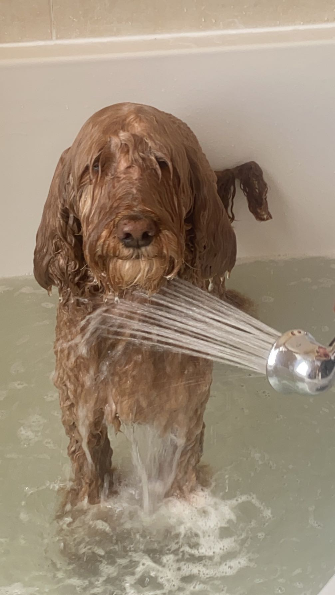

Hey, ik ben Francesco Mandas, 16 jaar oud, en ik woon in Noordwijk. Ik voetbal graag en speel bij VV Noordwijk in een vriendenteam. We zijn niet geweldig, maar het is altijd supergezellig. Naast voetbal werk ik ook in de horeca, omdat ik later graag een eigen kroeg of café wil hebben. Op dit moment werk ik bij café Presso op de hoofdstraat, waar ik al veel leer over het vak. Daarnaast breng ik regelmatig tijd door met mijn honden en mijn oma, die ik zo vaak mogelijk probeer te bezoeken. We hebben een hechte band en ik vind het altijd fijn om bij haar langs te gaan. Helaas zie ik niet al mijn familie zo vaak als ik zou willen, omdat een deel van hen in Italië woont, op het prachtige eiland Sardinië. Ze wonen verspreid over het dorpje Elmas en de nabijgelegen stad Cagliari. Ondanks de afstand probeer ik wel contact te houden en ik koester de momenten dat ik ze tijdens vakanties kan bezoeken. Sardinië voelt dan echt als een tweede thuis.
Het Vlietland College in Leiden is een middelbare school waar je terecht kunt voor zowel mavo, havo als vwo. Het is een school die bekend staat om de persoonlijke sfeer en het feit dat docenten je echt kennen. Het is niet zomaar een plek waar je alleen maar leert voor toetsen, maar ook een plek waar je jezelf kunt ontwikkelen, zowel op academisch als persoonlijk vlak. De leraren zijn betrokken en helpen je graag als je ergens moeite mee hebt. Wat ook fijn is aan het Vlietland, is dat er veel aandacht wordt besteed aan extra activiteiten buiten de lessen om, zoals excursies, sportdagen en culturele uitstapjes. Zo leer je niet alleen uit boeken, maar ook door samen dingen te beleven. Bovendien heeft de school een fijne locatie in Leiden, met een modern gebouw en goede faciliteiten. Als je houdt van een school waar je niet zomaar een nummer bent, maar waar er echt naar je gekeken wordt, dan zit je bij het Vlietland College goed!
Dit is de eerste website die ik ooit maak. Deze website ga ik vertellen over het binair stelsel en hoe dat in elkaar zit. Ook ga ik het hebben over Kleurmodellen, Compressie en Bitmap en Vectorafbeeldingen.
